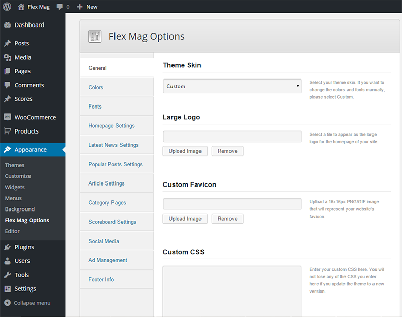
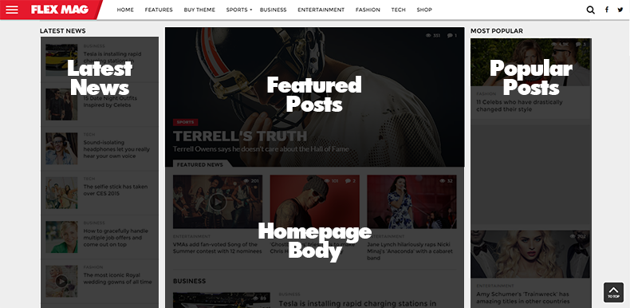
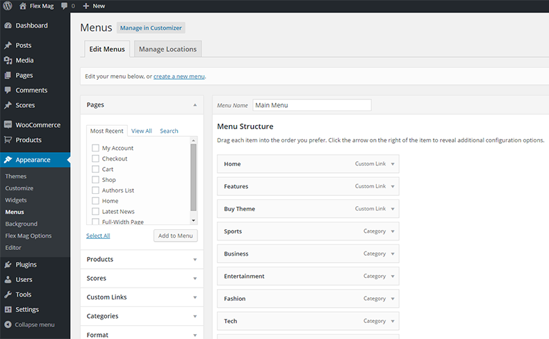
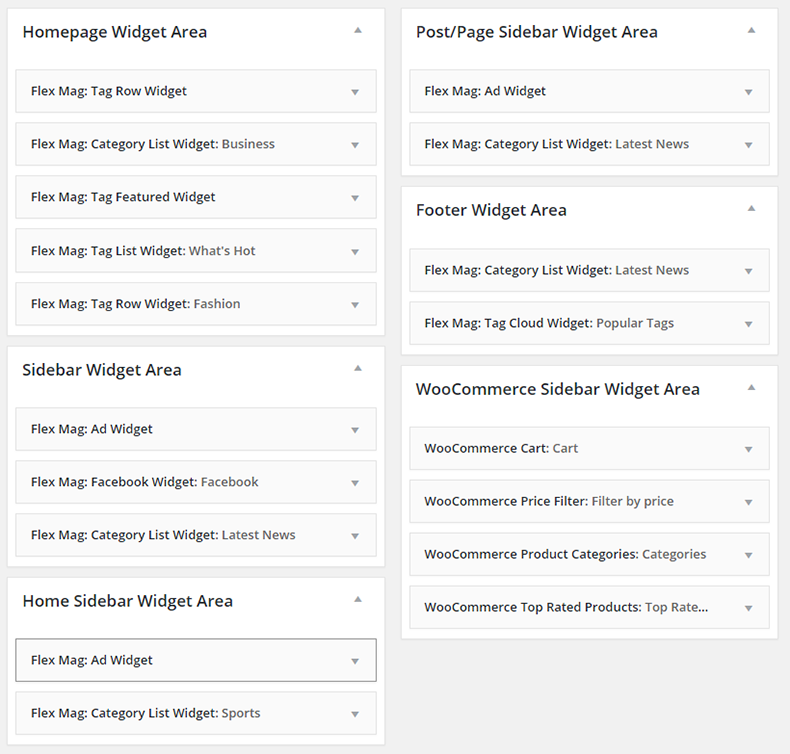
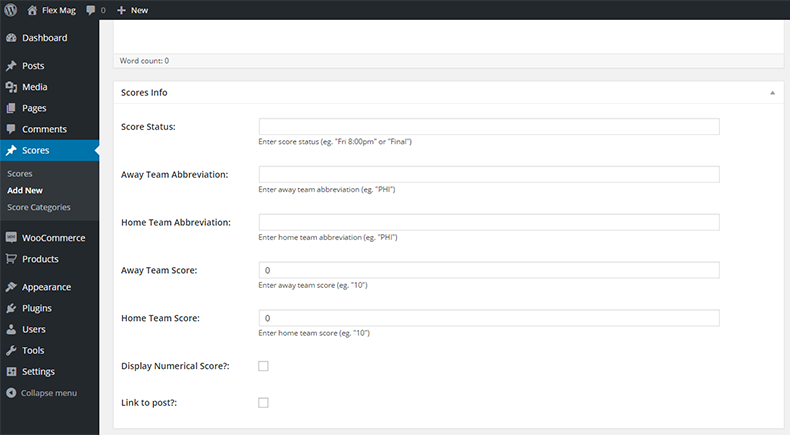
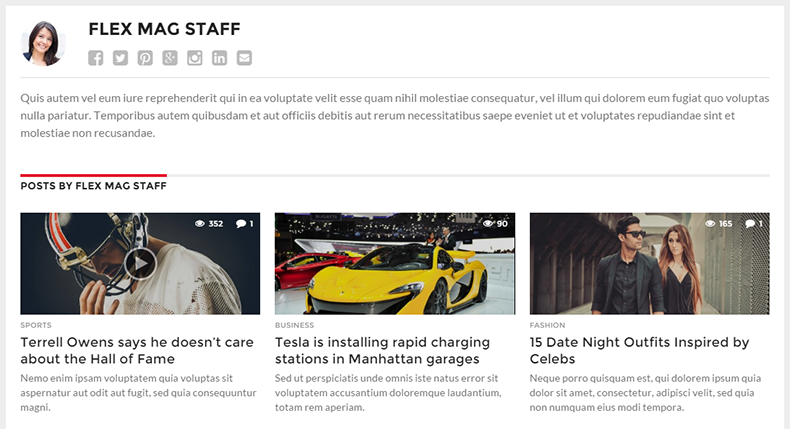

“Flex Mag” Documentation by “MVP Themes” v1.12
“Flex Mag”
Thank you for purchasing my theme. If you have any questions that are beyond the scope of this help file, please feel free to visit the MVP Themes Support Center here. Thanks so much!
Table of Contents
Disclaimer - top
Although support is not required of ThemeForest authors, I do offer support for the theme and its core features and functionality. I cannot guarantee that this theme will function with all third-party components and plugins. Flex Mag Theme is presented as is.
Installation/Homepage Setup - top
- Make sure that you have the latest version of Wordpress installed.
- You can upload Flex Mag to Wordpress in one of two different ways:
- Extract the flex-mag.zip and upload the extracted flex-mag folder to the /wp-content/themes/ directory on your FTP server.
- OR go to Appearance > Themes and click on the Add New link at the top. Then click Upload Theme and click Choose File, then select flexmag.zip and click Install Now.
- After you upload the theme, activate it by going to Appearance > Themes and place your mouse over Flex Mag and click the Activate button underneath.
After installing the theme, you can import the XML data file (located in the XML Data folder of the original zip file), which will populate your theme with dummy posts, categories, tags, and menus. For more information about how to import Wordpress XML data, click here and scroll down to the Wordpress section.
NOTE: The XML data does not come with the images from the demo, which are not licensed to be included in the theme file.
In order to utilize the Featured Posts section like in the demo, you will have to set up a static homepage by doing the following:
- Go to Pages > Add New. Enter Home as the title and in the Page Attributes section, select Home from the Templates dropdown menu on the right. Click Publish.
- Go to Settings > Reading and select the A static page radio button and in the Front Page: dropdown menu, select Home. Click Save Changes
- Go to Appearance > Flex Mag Options and click Reset Options.
Updating the Theme - top
From time to time, a theme update will be released that either fixes a bug and/or adds new features to the theme. You can update the theme in one of two ways:
- Remove the old version of the theme by going to Appearance > Themes and activating another theme (you may want to place your site in Maintenance mode via a plugin). Then, hover your mouse over the Flex Mag theme image and click Theme Details. Then click delete in the lower right corner of the window that appears. Then, follow the installation instructions above to install the new version of the theme.
- OR you can upload the new /flex-mag folder (located in the flex-mag.zip file) via FTP and overwrite the old files.
NOTE: Updating the theme will overwrite any changes you made to any of the core files (index.php, style.css, header.php, etc), however, you will not lose any changes you made to the Theme Options, menus, widgets, etc.
Also, make sure to go to your Theme Options and click "Save all changes" after each time you update the theme to make sure any new options are generated properly.
Theme Options - top
Flex Mag comes with custom Theme Options to allow you to set up many of the theme features without touching the code. To edit the Theme Options, go to Appearance > Flex Mag Options.

- General - Here, you will be able to select your "skin" for the theme, upload your custom logo to replace the default logo, upload a custom favicon, enter any custom CSS you need, as well as toggle the responsiveness of the theme, and the Infinite Scrolls feature. NOTE: Please click "Save All Changes" in the General Settings section once before you begin in order to register the default theme settings.
- Theme Skin - Select between the ready-made Sports, Fashion, Entertainment, or Tech skins or a select the Custom skin where you are free to select the and Fonts for your site through the other theme options.
- Fly-Out Menu Skin - Choose between a light and dark skin for the Fly-Out menu.
- Logo Location - Set the location of your logo.
- Logo - Here you can upload an image to serve as your logo that will appear in the floating navigation bar and will replace the default "Flex Mag" logo. The maximum recommended dimensions for this logo are 200x50.
- Logo in Navigation - If you are displaying your logo above the navigation, you can upload a separate logo that will appear in the floating navigation bar as you scroll down the page on desktop computers. It will also appear on mobile and tablet devices. The maximum recommended dimensions for this logo are 200x50.
- Custom Favicon - Upload a 16px x 16px PNG or GIF file to serve as your favicon.
- Custom CSS - Here you can enter any custom CSS code for the theme, which will overwrite any other CSS code. You will not lose any of the custom CSS in this field when you upgrade the theme to a newer version.
- Toggle Responsiveness - Uncheck this box if you would like to remove responsive feature of the site that alters the site based on the device it is being viewed on. By disabling this, visitors will see the desktop version of the site no matter what device they are viewing.
- Toggle Infinite Scroll - Uncheck this box if you would like to remove the Infinite Scroll feature.
- Colors - Here, you can select which colors you would like to use for your site.
- Primary Theme Color - Select or enter a hexidecimal code for the primary color of the site.
- Top Navigation Background Color - Select or enter a hexidecimal code for the background color of the nop navigation bar.
- Top Navigation Text Color - Select or enter a hexidecimal code for the background color of the dropdown menus.
- Top Navigation Text Hover Color - Select or enter a hexidecimal code for the text color when you mouse over the top navigation.
- Fly-Out Button Background Color - The background color of the Fly-Out Menu Button.
- Fly-Out Button Lines Color - The background color of the Fly-Out Menu Button Lines.
- Main Headlines Link Color - Select or enter a hexidecimal code for the link color of the headlines that appear throughout the site.
- Main Headlines Link Hover Color - Select or enter a hexidecimal code for the text color when you mouse over the headline links.
- Primary Link Color - Select or enter a hexidecimal code for the primary link color for the site. This will only affect unstyled links.
- Link Hover Color - Select or enter a hexidecimal code for the color of links when you hover your mouse over.
- Fonts - Here, you can select from over 700 Google Fonts to set the various fonts for your site. You can browse the list of Google Fonts here. You can also enter standard web fonts like Arial and Georgia as well.
- General Content Font - Enter the font name for the general font for the content on all pages.
- Fly-Out Menu/Top Navigation Font - Enter the font name for the fly-out and top navigation menus.
- Featured Posts/Article Headline Font - Enter the font name the font for the headlines in the Featured Posts section and the Article title on posts and pages.
- General Headline Font - Enter the font name the font for the general headlines around the site.
- Heading Font - Enter the font name the font for the general headings that appear at the top of the different sections around the site.
- Homepage Settings - This is where you will be able to configure the various homepage settings, including the Featured Posts section.
- Featured Posts Layout - Select the layout of your Featured Posts section on the homepage.
- Show Featured Posts? - Uncheck this box if you would like to remove the Featured Posts section from the homepage.
- Featured Posts Tag Slug - Enter the Tag Slug of the Tag you want associated with the Featured Posts section. Posts with this Tag will be displayed in the Featured Slider at the top of the homepage. You can find the slug for the Tag you want to use by going to Posts > Tags and then find the Tag you want to use for the Featured Posts section and find the slug for that Tag in the Slug column. To find more information on how to find the Tag Slug, click here.
- Featured Heading - The heading that will be displayed on top of the middle Featured Content section of the homepage.
- Homepage Body Layout - Select your layout for the body of the homepage that will appear in the middle column of the homepage.
- Show Homepag Left Sidebar? - Uncheck this box if you would like to remove the Left Sidebar from the homepage.
- Homepage Left Sidebar Layout - Select your layout for the left sidebar on the homepage.
- Homepage Right Sidebar Layout - Select your layout for the right sidebar on the homepage.
- Number of Posts Per Page - Set the number of posts per page that you want displayed on the Homepage Blog and the Latest News Template.

- Latest News Settings - Here you can change the settings for the Latest News column on the homepage.
- Latest News Heading - Set the number of posts to display in the Latest News sidebar.
- Maximum Number of Latest News Stories - Set the number of posts to display in the Latest News sidebar.
- More Latest News Page - Select the page for your Latest News Template. Refer to the documentation for more information on how to set up custom Page templates.
- Latest News Position - Select whether to display the Latest News sidebar on the left or the right of the main section of the homepage.
- Latest News Ad Code - Enter your ad code (Eg. Google Adsense) for the 300x250 ad area within the Latest News sidebar. The ad space can accommodate an ad of any height, but with only a maximum width of 300px.
- Popular Posts Settings - Here you can change the settings for the Popular Posts column on the homepage, if you are utliizing that feature.
- Popular Posts Heading - The heading that will be displayed at the top of the Popular Posts column.
- Number of Popular Posts - Set the number of posts to display in the Popular Posts sidebar.
- Popular Posts Days - Number of days to use for Popular Posts. Only posts published within this length of time will be displayed in the Popular Posts column.
- Popular Posts Ad Code - Enter your ad code (Eg. Google Adsense) for the 300x250 ad area within the Popular Posts sidebar. The ad space can accommodate an ad of any height, but with only a maximum width of 300px.
- Article Settings - Here you can toggle the display of featured images, social sharing buttons, author info, and the previous/next story section on all posts.
- Show Featured Image In Posts? - Uncheck this box if you would like to remove the featured image from automatically displaying in all posts.
- Show Social Sharing Buttons? - Uncheck this box if you would like to remove the social sharing buttons from all posts.
- Show Author Info? - Uncheck this box if you would like to remove the author info from the top of all posts.
- Show Related Posts? - Uncheck this box if you would like to remove the Related Posts from the bottom of all posts.
- Auto Load Previous Post? - Uncheck this box if you would like to remove the automatic loading of the previous post below the article.
- Show Previous/Next Post Links - Uncheck this box if you would like to remove the links to the previous/next posts that appear in the left/right margins of larger resolution screens.
- Article Sidebar Layout - Select between a Sidebar, Latest News, or Popular Posts for the sidebar on article pages.
- Disqus Forum Shortname - If you want to use Disqus as your commenting system, enter your Disqus Forum Shortname in order to activate Disqus on your site. This is the unique identifier for your website in Disqus (i.e. yourforumshortname.disqus.com).
- Article Ad Code - Enter your ad code (Eg. Google Adsense) for the 300x250 ad area within the body of the article. The ad space can accommodate an ad of any height, but with only a maximum width of 300px.
- Category Pages - Here, you can configure the layout of your category pages.
- Show Featured Posts? - Uncheck this box if you would like to remove the Featured Posts section from the top of your category pages.
- Featured Posts Layout - Select the layout of your Featured Posts section on the category pages.
- Category/Archive Body Layout - Select your layout for the body of your category and archive pages.
- Scoreboard Settings - Here you can set up the optional custom scoreboard feature. For more information on how to enter scores to display in this widget, please refer to the Scoreboard section of the documentation.
- Show Scoreboard? - Uncheck this box if you would like to remove the scoreboard feature from the site.
- Scoreboard Skin - Choose between a light and dark skin for the Scoreboard.
- Name of Category X - Here you can enter a label for your category or sport, such as MLB, NFL, tennis, etc.
- Select Category X - Select from any of the scoreboard categories that you created when entering scoreboard data. For more information on how to enter scoreboard data, please refer to the Scoreboard section of the documentation.
- Social Media - Here you can enter URLs for several popular social media sites to activate links to each page that will appear in a floating box on the right of the browser window. Simply enter the URL and the link will appear automatically!
- Ad Management - Enter ad code for the optional leaderboard banner areas and/or a wallpaper ad.
- Leaderboard Location - Set the location of your header leaderboard.
- Header Leaderboard Ad Code - Enter your ad code for the 970x90 leaderboard ad area that will appear at the top of the site. You can also place a 728x90 ad in this area.
- Responsive Ad Area Below Article - Enter your ad code (Eg. Google Adsense) to activate the responsive ad area that will be displayed below the content of each article.
- Wallpaper Ad Image URL - Enter the URL for the wallpaper image (i.e. http://www.xyzdomain.com/xyz-wallpaper.jpg). Please do not insert the actual ad code for the wallpaper ad, just the image URL. The recommended width of the wallpaper ad is a minimum of 1400px. The recommended height is a minimum of 600px. NOTE: Due to the nature of wallpaper ads, the content of the site will sit on top of the ad and cover up the middle 1200px of the ad. The only visible area will the the left and right margins of the image which is why the ad should be wider than 1200px.
- Wallpaper Ad Click-Through URL - Enter the URL that users will be taken to if they click on the Wallpaper Ad.
- Footer Options - Enter your information for the Footer Info Box.
- Show Footer Info Box? - Uncheck this box if you would like to remove the Footer Info Box. The Footer Info Box will appear as a widget in the Footer Widget Area.
- Footer Logo - Here you can select a file to appear as the logo in the Footer Info Box. The recommended maximum width for this logo is 300px.
- Footer Info Text - Here you can enter any text to display in the Footer Info Box. You can use HTML in this section to set paragraphs, links, etc.
- Copyright Text - Here you can enter any text you want (eg. copyright text).
Flex Mag supports three custom menu sections: a Main Menu for the top navigation bar that will only be visible on desktop devices, a Fly-Out Menu that will slide out from the right and will be used on all devices, and a Footer Menu that will appear at the very bottom of your site.
To set up the menus, go to Appearance > Menus. Here, you can create a new menu by clicking the create a new menu link, give the menu a name, and click Save Menu button. You will then see a Manage Locations tab appear at the top of the screen. Click the Manage Locations tab and then select your newly created menu from the dropdown list of the menu location you would like to set up and click Save Changes. You are now able to create a custom link, page or category and add it to your new menu by clicking the Add to Menu button.
If you would like to add a "Home" button, you can do so by adding a "Custom Links" menu item. Enter the URL of your site as the URL and "Home" as the Link Text.
For more information on how to use the Wordpress custom menu feature, click here.
To utilize the "Megamenu" feature for Category menu items (the Megamenu feature will only work for Categories), do the following:
- Go to Appearance > Menus and click the Screen Options button at the top right corner of your screen.
- Make sure the CSS Classes checkbox is checked, then click the Screen Options button again to close the Screen Options.
- In the Menu Structure box, select the Categroy menu item you would like to add a Megamenu to by clicking on the down arrow on the right of the menu item.
- Type mega-dropdown in the CSS Classes (optional) box
- Click Save Menu

Flex Mag comes with 10 custom widgets for use in 6 different widget areas: Homepage Widget Area, Sidebar Widget Area, Home Sidebar Widget Area, Post/Page Sidebar Widget Area, Footer Widget Area, and the WooCommerce Sidebar Widget area if you are using the WooCommerce plugin. To activate the widgets, go to Appearance > Widgets and click and drag a widget from the Available Widgets section and drop it into any of the 6 different custom widget areas.
Widget Areas:
- Homepage Widget Area - If you have selected "Widgets" in your Flex Mag Options > Home Body Layout, then this is where you place your widgets to appear below the large Featured Slider area on the homepage.
- Sidebar Widget Area - This is where you can place your widgets that will appear in the sidebar of any page on your site other than the homepage, a post/page, or a Woocommerce page.
- Sidebar Home Widget Area - This is where you can place your widgets that will appear in the sidebar of your homepage if you have selected to display a sidebar on your homepage.
- Post/Page Sidebar Widget Area - This is where you can place widgets that will appear in your Posts/Pages.
- Footer Widget Area - This is where you can place your widgets that will appear in the footer of the site.
- WooCommerce Sidebar Widget Area - If you are using the WooCommerce plugin, this is where you can place the custom WooCommerce widgets that will appear in the sidebar of your WooCommerce pages.
Available Widgets:
- Flex Mag: Ad Widget - A widget that displays any sized ad. If you want to place a 300x250 ad in your sidebar, simply place it in one of the sidebar widget areas and then enter your ad code. You can also use this ad to display a leaderboard ad (970x90, 728x90, etc) in the Homepage Widget Area.
- Flex Mag: Category List Widget - A widget that features a post from a Category of your choice. Select All Categories if you would like to display the most recent posts of all categories.
- Flex Mag: Category Row Widget - A widget that displays posts from a Tag of your choice. Select All Categories if you would like to display the most recent posts of all categories.
- Flex Mag: Facebook Widget - A widget that displays a Facebook Like Box. You can customize the title header, your Facebook page URL, and a few other options to help customize the Like Box to your liking.
- Flex Mag: Gallery Widget - A widget that displays a scrolling gallery of images from posts of your choice.
- Flex Mag: Popular Posts Widget - A widget that displays a list of popular posts within a time period of your choice.
- Flex Mag: Tag Cloud Widget - A custom Tag Cloud widget.
- Flex Mag: Tag Featured Widget - A widget that prominently features posts from a Tag of your choice.
- Flex Mag: Tag List Widget - A widget that displays posts from a Tag of your choice.
- Flex Mag: Tag Row Widget - A widget that displays posts from a Tag of your choice.

Images - top
Flex Mag supports retina-ready images. To utilize this feature, follow these instructions:
- Create a second image that is twice the size of your existing image. For example, if your logo is 200x60, your retina image would need to be 400x100.
- Add @2x to the end of the name of the retina image. For example, if your logo is called logo.png, name your retina version logo@2x.png.
- Upload the retina image in the same directory as your non-retina image. For example, if your logo is located in /wp-content/themes/flex-mag/images/, you must upload the retina version in this directory.
- That's it!
Flex Mag utilizes Wordpress' built-in Featured Image feature to handle image management. The recommended size for images to show properly within posts and in the Featured Posts area on the homapage and category pages is 1000x600px. If you plan to use the Full-Width Featured Posts option or the Full-Width Article image options, the recommend Featured Image dimensions are 1600x960px.
To set the featured image for a post, go to Posts > Add New (or edit an existing post) and click the Upload/Insert icon above the main text box. From here, choose a file and upload it. Once it is uploaded, click Use as featured image located near the bottom of the Add Media window. Then click Save all changes, close the Add Media window and you're good to go! Flex Mag will take care of the rest in generating the smaller thumbnails that show up in the various places around the site.
Background - top
Flex Mag utilizes Wordpress' built-in Custom Backgrounds feature to set up your custom background color and/or image. For more information on how to set up your custom background, click here.
Post Options - top
Flex Mag gives you a variety of custom options for your posts, inlcuding a custom Image Gallery, a Featured Headline feature, and the ability to set a full-width posts.
- Flex Mag Image Gallery - Flex Mag comes with an easy-to-uuse custom Image Gallery. In order to utilize the built-in Image Gallery, you can either add a new post by going to Posts > Add New (or edit an existing post) and select the Gallery radio button in the Format box on the right side of the screen. Then, you can add images to your post by clicking the Add Media button above the main text box, then click the Upload Files tab and upload the images you want to include in the Image Gallery. You do not need to insert the images into the post, so once you upload the image(s), they will appear in the gallery for that post. So, once the image(s) are uploaded, you can close the Insert Media screen by clicking on the X in the upper right corner, then you can save/publish your post and the Image Gallery will appear at the top of your post.
- Post Formats - Flex Mag comes utilizes WordPress' built in Post Formats feature where you can select the type of post you are creating. For example, if you have a video in the post, you should go to the Format box and select the Video radio button, which will activate the transparent video overlay on posts throughout the site that will show visitors that there is a video in the post.
- Video/Audio Posts - Flex Mag allows you to replace the default Featured Image in posts with an embedded video or audio clip. To utilize this feature, go to Posts > Add New (or edit an existing post) and enter your embed code (HTML or Javascript) in the box titled Video/Audio Embed.
- Featured Headline - Flex Mag allows you to enter a separate, smaller headline for use in the Featured Posts area on the homepage. To utilize this feature, go to Posts > Add New (or edit an existing post) and enter your featured headline in the box titled Featured Headline.
- Featured Image Excerpt - You can add a custom excerpt to overlay on top of the Featured Image on your posts within the Post Edit screen. At the top right corner, click "Screen Options" and make sure "Excerpt" is checked and then scroll down to the Excerpt box and enter your own custom excerpt that will take the place of the default text. This text will also appear around the site where excerpts are used (i.e. in widgets and archive pages).
- Featured Image Caption - Flex Mag allows you to enter a caption (which can also be used as a photo credit) for your Featured Images within posts. This will be displayed just below the featured image. To utilize this feature, go to Posts > Add New (or edit an existing post) and enter your photo credit in the box titled Photo Credit. You can also use HTML in this space.
- Post Template - Select between 8 different Post Templates. To utilize this feature, go to Posts > Add New (or edit an existing post) and select a layout from the dropdown box in the Post Template section on the right sidebar.
- Show/Hide Featured Image - Flex Mag allows you to remove the featured image from individual posts. To utilize this feature, go to Posts > Add New (or edit an existing post) and select "Hide" from the dropdown box in the Featured Image Show/Hide section on the right sidebar.
Page Templates - top
Flex Mag comes with 5 custom page templates: Home, Authors List, Latest News, Full-Width, and Videos. In order to create a custom page template
- Go to Pages > Add New. Enter a title in the Enter a title here box.
- In thePage Attributes section, select the page template you want to use from the Templates dropdown menu on the right.
- Click Publish and that's it!
Scoreboard - top
Flex Mag comes with a custom Scoreboard plugin that allows you to quickly enter and update scores to display in the custom scoreboard area. Here are the instructions for setting up your scoreboard posts:
- Go to Plugins > Add New then click the Upload link at the top.
- Click Choose File and select the mvp-scoreboard.zip file (located in the /plugins folder of your original zip file you downloaded from Themeforest), then click Install Now.
- After the plugin installs, click the Activate Plugin link.
- Go to the Scores section of your Wordpress backend.
- To add a new score, click Add New.
- Enter a title for the score entry (this will only be used if you use the "link" feature to make scores clickable to create previews, recaps, or game stories for each scoreboard item).
- Next, if you plan to create a preview, recap, or game story, you can enter that information in the main text editor area
- Then look for the Scores Info box, which is below main text entry box. Here, you can enter a Score Status (e.g. Final or Sat 8:00pm), enter the abbreviations of the home and away teams, enter the scores for each team, and select whether you want to actually display the numerical score in the scoreboard and whether you want to link the scoreboard item to the post. The Display Numerical Score feature is used for scoreboard items that haven't occurred yet. So, instead of displayin the default 0-0 score, you can hide the score and then check the box once the game begins or ends.
- Next, you will need to select or add a new catgory (e.g. MLB or Football) via the Score Categories box, located in the right sidebar of the post screen. Click Add New Category to associate this score with a category.
- Once you have entered a title, entered information in the Scores Info box and then selected (or added a new) category, click the Publish button and that's it!
- Make sure that you have set up your Scoreboard Settings in the Flex Mag Options and you should be good to go!

Flex Mag utilizes Theia Sticky sidebar to allow sidebar content to stay stay visible within each section as you scroll down the page. Here are the instructions to install and set up Theia Sticky Sidebar for Flex Mag:
- Go to Plugins > Add New then click the Upload link at the top.
- Click Choose File and select the theia-sticky-sidebar.zip file (located in the /plugins folder of your original zip file you downloaded from Themeforest), then click Install Now.
- After the plugin installs, click the Activate Plugin link.
To customize Theia Sticky Sidebar to your liking, you can edit the slider settings by going to Settings > Theia Sticky Sidebar. Click here for the full documentation for Theia Sticky Sidebar.
Once you are in the Theia Sticky Sidebar Settings (Settings > Theia Post Slider), you will need to go to the General tab and enter the following into the Sidebar CSS Selector box: #post-right-col,#post-sidebar-wrap,.home-mid-col,.home-right-col,#arch-right-col
Then, in the Sidebar additional top margin (px) box, you will need to enter a value of 65, in the Sidebar additional bottom margin (px), enter 15, and in the Minimum width (px) box, enter 767. That's it! Your sidebars should now be sticky throughout your site!
Author Info - top
Flex Mag allows you to display information about the author on each post.
- Author Description - You can enter an author description via the author's user profile in the Biographical Info section. This description will show up on the author's individual author page as well as the author list page.
- Author Avatar - Flex Mag utilizes Gravatar to display the author's avatar in the author info below each post. Please sign up at Gravatar.com with the email address you are using with the author on your site. Once you have associated an avatar with this email, this avatar will appear in the author info as well as in the comments section of the site.
- Author Social Profiles - Enter the URLs in the user's profile for each of the popular Social Media sites in order to activate the social buttons that will appear on the author page and the author list page.

Translation Files - top
Flex Mag comes translation-ready with .po/.mo files ready for translation. These files are located in the /languages folder of the main theme folder. Once you have translated the files, simply save them with the name of your language code (i.e. es_ES.po and es_ES.mo for Spanish) and place them back in the /languages folder.
For more information on how to utilize these files to translate this theme into another language, click here.
WooCommerce - top
Flex Mag is fully compatible with the popular e-commerce plugin WooCommerce, which will allow you to create a store within your site. You can download WooCommerce here. Once you have downloaded the plugin, follow these instructions to install the plugin with Wordpress:
- Go to Plugins > Add New
- Select the Upload link at the top.
- Click Choose File and select the woocommerce.zip file that you downloaded, then click Install Now.
Once the plugin is activated, WooCommerce will need to install several pages in order for it to function properly. Click here for more information about setting up WooCommerce.
bbPress - top
Flex Mag is fully compatible with the popular forum plugin bbPress, which will allow you to add a forum to your site. You can download bbPress here. Once you have downloaded the plugin, follow these instructions to install the plugin with Wordpress:
- Go to Plugins > Add New
- Select the Upload link at the top.
- Click Choose File and select the bbpress.xxx.zip file that you downloaded, then click Install Now.
Click here for more information about setting up bbPress.
CSS Files - top
- style.css - Main theme stylesheet
- iecss.css - Stylesheet with code for IE8 and earlier version browsers.
- media-queries.css - Stylesheet with the responsive CSS utilizing Media Queries.
- reset.css - The goal of a reset stylesheet is to reduce browser inconsistencies in things like default line heights, margins and font sizes of headings, and so on.
Javascript Files - top
- /js/autoloadpost.js - Used for the auto loading posts feature on posts.
- /js/jquery.elsatislide.js - Used for the scoreboard feature.
- /js/jquery.history.js - Used for the auto loading posts feature on posts.
- /js/jquery.infinitescroll.js - Used for the Infinite Scroll feature that continually loads posts without having to click to the next page (like Facebook or Buzzfeed).
- /js/jquery.nicescroll.min.js - Used for the scrolling feature in the menu.
- /js/manual-trigger.js - Used for the Infinite Scroll feature.
- /js/retina.js - Adds the retina functionality.
- /js/scripts.js - Used for various custom javascript functions for use in the theme.
- /js/scrollspy.js - Used for the auto loading posts feature on posts.
Support - top
If you have any questions related to setting up the theme that are not covered in this documentation or if you encounter any technical bugs, please submit a ticket at the MVP Themes Support Center. Please note that this theme is sold "as-is" and any additional custom modifications you would like to make to the theme are your responsibility.
Sources and Credits - top
I have used the following images or other files as listed.
Once again, thank you so much for purchasing this theme. As I said at the beginning, I'd be glad to help you if you have any questions relating to this theme. If you have a more general question relating to the themes on ThemeForest, you might consider visiting the forums and asking your question in the "Item Discussion" section.
MVP Themes
Go To Table of Contents